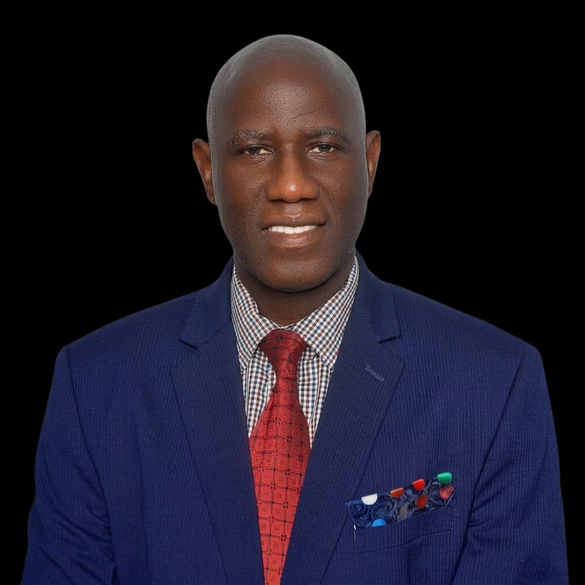
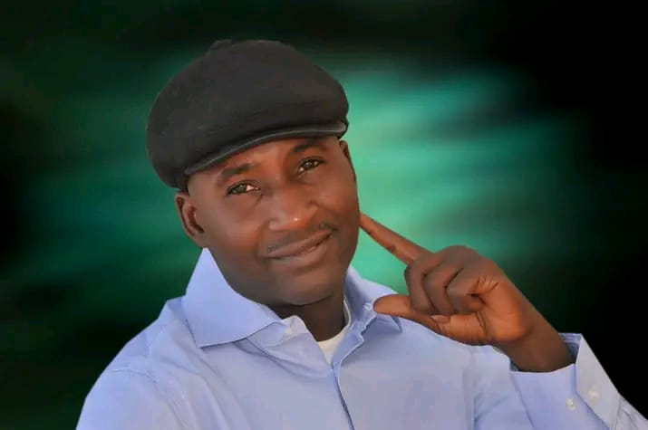
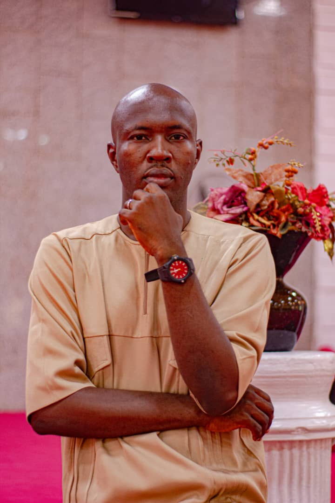
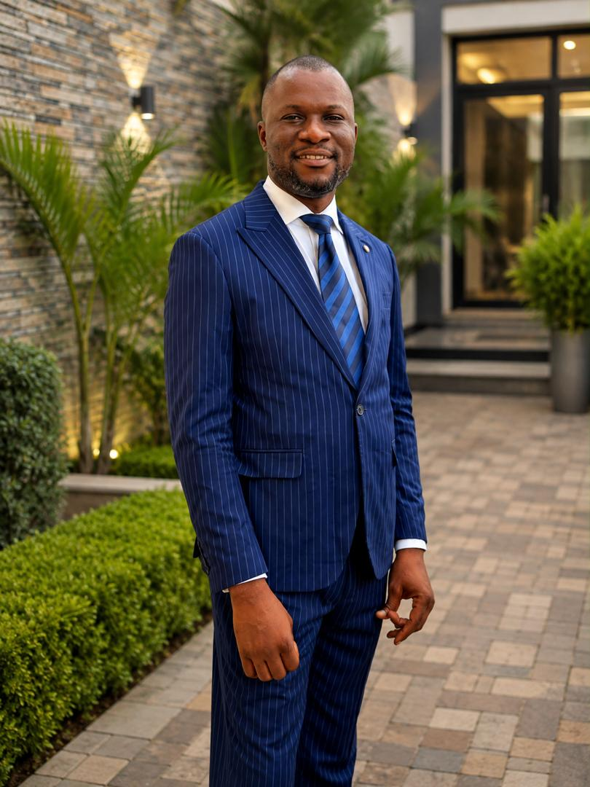
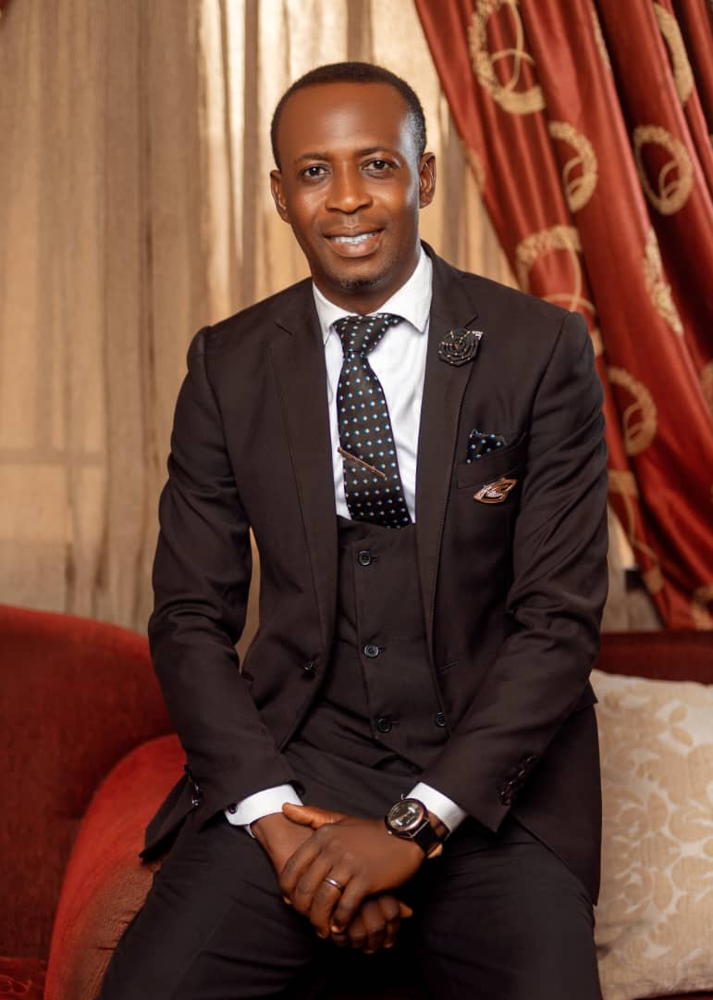

Getting there
RCCG Strong Tower Zone
Provincial Headquarters, opposite GT Bank, off Ibi Road, Wukari, Taraba State, Nigeria.
Get directions
The Redeemed Christian Church of God — Taraba Province 2 Choir presents
Two days set apart for voice, spirit, and skill — a retreat built for every chorister who wants to grow, and a concert built for everyone who wants to worship.
Friday opens the retreat in worship. Saturday carries it from training into the concert itself.
The voices leading each session across the two days.





Built around one question: what does it take to be a vessel God can use?
Provincial Headquarters, opposite GT Bank, off Ibi Road, Wukari, Taraba State, Nigeria.
Get directions
Choristers, instrumentalists, and anyone who loves to worship — this retreat is for you.
Reserve your seat